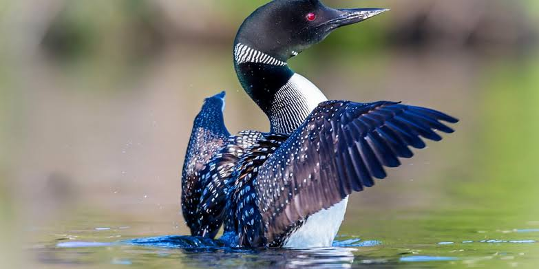

Loons
Birds
The loons or divers are a group of aquatic birds found in many parts of North America and northern Eurasia. All living species of loons are members of the genus Gavia, family Gaviidae and order Gaviiformes.
Family: Gaviidae; Coues, 1903
Scientific name: Gavia
Class: Aves
Order: Loons
Mass: Common loon: 1.6 – 8 kg, Black-throated loon: 2.2 kg, Red-throated loon: 1.8 kg, Yellow-billed loon: 5 kg
Length: Common loon: 70 – 90 cm, Black-throated loon: 40 – 81 cm, Yellow-billed loon: 84 – 92 cm
Loon, (order Gaviiformes), also called diver, any of five species of diving birds constituting the genus Gavia, family Gaviidae. Loons were formerly included, along with the grebes, to which they bear a superficial resemblance, in the order Colymbiformes, but they are considered to constitute their own separate order. Loons range in length from 60 to 90 cm (2 to 3 feet).
Characteristics include a strong tapered bill, small pointed wings, webs between the front three toes, and legs placed far back on the body, which makes walking awkward.
Loons have thick plumage that is mainly black or gray above and white below. During the breeding season the dorsal plumage is patterned with white markings, except in the red-throated loon (Gavia stellata),
which during the summer is distinguished by a reddish brown throat patch. In winter the red-throated loon develops white speckling on the back, while the other species lose these markings.
Almost wholly aquatic, loons can swim long distances underwater and can dive from the surface to a depth of 60 metres (200 feet). Besides having solid bones, loons can further decrease their buoyancy for these dramatic dives by compressing air from their lungs, feathers, and internal air sacs.
(Young loons, however, are buoyant and pop up like corks from their first attempts at dives.) Loons are generally found singly or in pairs, but some species, especially the Arctic loon, or black-throated diver (G. arctica), winter or migrate in flocks.
The voice is distinctive, including guttural sounds and the mournful, eerie wailing cries that in North America may have given rise to the common name loon.
(Some sources suggest it arises from the Old Norse word lōmr, which means “to moan.”) Loons feed mainly on fishes, crustaceans, and insects.
The nest is usually a heap of vegetation at the water’s edge, in which two (or, rarely, three) olive-brown spotted eggs are laid. The parents share the task of incubation. The chicks hatch in about 30 days and, as soon as their down is dry, enter the water with the parents.
(Loons are precocial birds; that is, they are well-developed at birth.) Although loons are strong fliers, all but the small red-throated loon need a broad expanse of water for takeoff.
Thus, except for G. stellata, they are limited to large lakes. The red-throated and arctic loons are virtually circumpolar in distribution, the latter being most abundant on the Pacific coast of North America.
The common loon, or great northern diver (G. immer), is the most abundant loon in North America, and its haunting voice, heard in summer on northern wooded lakes, is considered a symbol of the wilderness.
Because of its mournful songs, the Ojibwa considered the loon an omen of death, and the Cree saw it as the spirit of a warrior denied entry to heaven.
Common loons make a variety of calls, which carry long distances across water. A wail calls to and locates (by response) a missing mate. A “yodel” is given in aggressive defense of territory.
(Each male has a different version of this call, which persists year after year.) A tremolo of 8–10 notes, resembling human laughter, is heard in spring in the loon’s defense of territory or chicks.
It is the only call made in flight and is frequently combined with other calls. Parents also hoot or “kwuuk” to chicks that may have strayed too far away. Parents often swim with the young on their backs. The common loon’s counterpart across Eurasia is the similar white- (or yellow-) billed diver (G. adamsii).
Biology of Loons
Behaviour and ecology
Loons are excellent swimmers, using their feet to propel themselves above and under water. However, since their feet are located far back on the body, loons have difficulty walking on land. Thus, loons avoid coming to land, except when nesting or severely injured.
Loons fly strongly, though they have high wing loading (mass to wing area ratio), which complicates takeoff. Indeed, most species must run upwind across the water's surface with wings flapping to generate sufficient lift to take flight.
Only the red-throated loon (G. stellata) can take off from land. Once airborne, loons are capable of long flights during migration.
Scientists from the U.S. Geological Survey, who have implanted satellite transmitters in some individuals, have recorded daily flights of up to 1078 km in a 24-hour period, which probably resulted from single movements.
North European loons migrate primarily via the South Baltic and directly over land to the Black Sea or Mediterranean. Loons can live as long as 30 years and can hold their breath for as long as 90 seconds while underwater.
Diet and feeding
Loons find their prey by sight. They eat mainly fish, supplemented with amphibians, crustaceans and similar mid-sized aquatic fauna.
Specifically, they have been noted to feed on crayfish, frogs, snails, salamanders and leeches. They prefer clear lakes because they can more easily see their prey through the water.
The loon uses its pointy bill to stab or grasp prey. They eat vertebrate prey headfirst to facilitate swallowing, and swallow all their prey whole.
To help digestion, loons swallow small pebbles from the bottoms of lakes. Similar to grit eaten by chickens, these gastroliths may assist the loon's gizzard in crushing the hard parts of the loon's food such as the exoskeletons of crustaceans and the bones of frogs and salamanders.
The gastroliths may also be involved in stomach cleaning as an aid to regurgitation of indigestible food parts.
Loons may inadvertently ingest small lead pellets, released by anglers and hunters, that will contribute to lead poisoning and the loon's eventual death.
Jurisdictions that have banned the use of lead shot and sinkers include but are not limited to Maine, New Hampshire, Vermont, some areas of Massachusetts, Yellowstone National Park, Great Britain, Canada, Michigan, and Denmark.